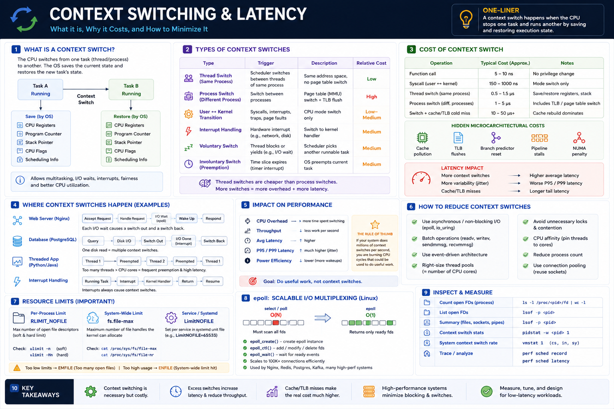

Save/Restore State • Thread vs Process Switch • Cache Pollution • Tail Latency • Minimization Strategies
Core Idea
A CPU can execute only one thread per core at a time. The OS scheduler continuously switches the CPU between runnable threads so that thousands of tasks can share a handful of cores. This is a context switch — and it is not free. Every switch burns CPU cycles and raises latency.
Rule of thumb: If your system does millions of context switches per second, you are burning CPU cycles that could be doing useful work. Goal: do useful work, not context switches.
Types of Context Switches
| Type | Trigger | What Changes | Cost |
|---|---|---|---|
| Thread Switch (same process) | Scheduler picks another thread in same app | Registers, stack ptr only. Same address space. | Low ~0.5–1.5 µs |
| Process Switch (different process) | Scheduler picks thread in different process | Registers + page tables + TLB flush + address space | High ~1–5 µs |
| User ↔ Kernel Transition | Syscall, interrupt, page fault, trap | CPU mode switch only — Ring 3 to Ring 0 | Low–Medium |
| Interrupt Handling | Hardware: NIC packet, disk complete, timer | CPU pauses task, runs kernel handler, resumes | Medium |
| Voluntary Switch | Thread blocks on I/O, lock, or sleep | Scheduler picks next runnable task | Medium |
| Involuntary Switch (Preemption) | Time slice expires — timer interrupt | OS preempts running task regardless of state | Medium |
Thread switches are cheaper than process switches. More switches = more overhead + more latency. Both types matter in production.
Cost of a Context Switch
| Operation | Typical Cost | Notes |
|---|---|---|
| Function call | ~5–10 ns | No privilege change |
| System call (no I/O) | ~150–1000 ns | Mode switch only |
| Thread context switch | ~0.5–1.5 µs | Registers + stack |
| Process context switch | ~1–5 µs | TLB flush + page tables |
| Cache/TLB cold miss | +10–50 µs | Cache rebuild dominates |
The switch itself is microseconds. The cache rebuild after the switch is often 10–50x more expensive — and usually invisible in profiling.
Hidden Microarchitectural Costs
The save/restore is only the visible cost. The real damage is done to the CPU's internal state:
Cache Pollution
Thread A's working set is evicted when Thread B runs. Thread A must reload all its data from L3 or RAM on return.
TLB Flushes
Process switches invalidate TLB entries. All virtual-to-physical address translations must be rebuilt.
Branch Predictor Reset
CPU's branch prediction history is lost. First N branches after a switch are mispredicted — each costs 15–20 cycles.
Pipeline Stalls + NUMA Penalty
CPU instruction pipeline is drained. If thread migrates to another socket, memory access latency doubles (NUMA).
Impact on Performance & Latency
| Metric | Effect of More Switches |
|---|---|
| CPU Overhead | More time spent switching vs working |
| Throughput | Less useful work per second |
| Average Latency | Higher scheduling delays |
| P95 / P99 Latency | Much higher — jitter from scheduler |
| Power Efficiency | More wakeups = less idle time |
Latency Impact Chain
More Threads does NOT always mean more performance
For CPU-bound work: thread pool size should approximate the number of CPU cores. For I/O-bound work: event-driven architecture eliminates most switches entirely.
Where Context Switches Happen in Production
Web Server (Nginx)
Database (PostgreSQL)
Threaded App (Python/Java)
Interrupt Handling
How to Reduce Context Switches
writev, sendmmsg, recvmmsg. Fewer syscalls = fewer switches.System Design Implications & Real-World Choices
Architecture vs Context Switch Cost
| Design Choice | Switch Impact |
|---|---|
| Thread per request | Very High |
| Thread pool | Moderate |
| Event-driven (epoll) | Low |
| Async I/O (io_uring) | Very Low |
| Kernel bypass (DPDK) | Minimal |
How Real Systems Minimize Switches
| System | Strategy |
|---|---|
| Nginx | epoll event loop, few workers per CPU |
| Redis | Single-threaded event loop — near-zero switches |
| Kafka | Batching + zero-copy — fewer I/O wakeups |
| PostgreSQL | Async I/O + shared buffers reduce disk blocks |
| Chat System | Non-blocking sockets + epoll for 1M+ connections |
| Trading Engine | CPU pinning + DPDK — kernel bypass, busy poll |
| Search Engine | Separate CPU and I/O thread pools |
Production Failure Scenarios
High CPU, low throughput
Too many runnable threads. Scheduler spends more time switching than executing work. Reduce thread count or adopt event-driven architecture.
High P99 latency
Frequent thread wake-ups and scheduler jitter drive tail latency. Reduce blocking I/O and lock contention. Use async I/O.
Cache miss storm
Threads constantly migrate across CPU cores. Enable CPU affinity (taskset / pthread_setaffinity_np) to keep workers on the same cores.
Lock contention cascade
Threads repeatedly block on mutexes. Every block = voluntary context switch. Replace with lock-free structures, finer-grained locking, or async message passing.
Measuring Context Switches — Tools
| Tool / Path | What It Shows |
|---|---|
pidstat -w <pid> 1 | Voluntary + involuntary switches/sec per process |
vmstat 1 | System-wide context switch rate (cs column) |
perf sched record | Full scheduler trace — latency & migrations |
perf sched latency | Per-task scheduling latency breakdown |
/proc/<pid>/status | voluntary_ctxt_switches + nonvoluntary_ctxt_switches |
htop → F2 columns | Add VCSW / IVCSW columns per process |
Debugging Checklist
perf schedEngineer Progression & Decision Framework
| Scenario | Approach |
|---|---|
| Thousands of concurrent clients | epoll / async I/O |
| CPU-bound workload | Thread pool = CPU cores |
| High lock contention | Lock-free / message queues |
| Ultra-low latency | CPU affinity + kernel bypass (DPDK) |
| Many small syscalls | Batch: writev, sendmmsg |
| Blocking disk/network I/O | Async I/O: io_uring |
| Thread migration / NUMA | taskset / numactl |
Interview Cheat Sheet
Principal Engineer Takeaway
Necessary overhead — enables multitasking, fairness, I/O handling. Cannot be eliminated entirely.
Hidden cost dominates — cache/TLB rebuild is 10–50x more expensive than the switch itself.
P99 killer — excessive switches add jitter that inflates tail latency far more than average latency.
Minimize by design — async I/O, event loops, right-sized thread pools, CPU affinity, batching.
Staff Engineers don't just ask whether the CPU is busy — they investigate why the scheduler is busy, how many context switches occur per request, and what architectural changes can reduce unnecessary scheduling overhead. That's the difference between tuning and designing.
